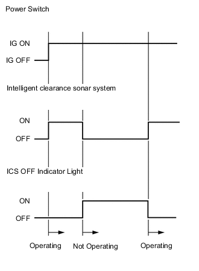
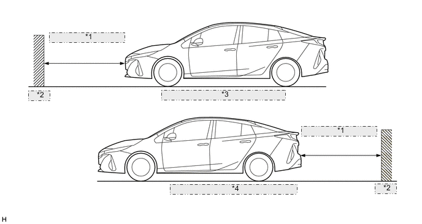

ICS OFF INDICATOR LIGHT OPERATION CHECK
Turn the power switch on (IG).

Turn the intelligent clearance sonar system off and confirm that the ICS OFF indicator in the combination meter illuminates.
Tech Tips
If the intelligent clearance sonar system is not set to off in the customize settings, the intelligent clearance sonar system will operate when the power switch is turned on (IG).
DETECTION AREA
Intelligent clearance sonar system detection distance
The ultrasonic sensors (front/rear center sensor) can detect objects up to a distance of approximately 4.0 m (13.124 ft.). However, the detection distance varies depending on the shape of the object.

| *1 | Approximately 4.0 m (13.124 ft.) |
| *2 | Object |
| *3 | When the vehicle is moving forward. |
| *4 | When the vehicle is moving backward. |
Tech Tips
The detection range shown in the illustration is for when detecting an object that is 2.0 m (6.562 ft.) wide, 1.0 m (3.281 ft.) tall and is perpendicular to the ground.
If the front/rear sensors and left/right sensors do not simultaneously detect an object, the intelligent clearance sonar function does not operate.
Note
Even if the intelligent clearance sonar system detects an object, the system may not operate depending on the vehicle conditions.